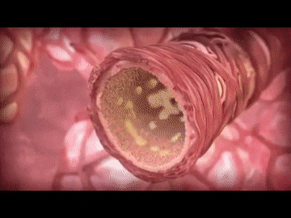
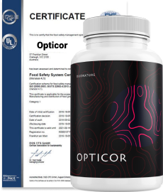

«Los vasos sanguíneos limpios aseguran la vida larga y feliz» - asegura Miguel Rabellino, un cardiólogo y longevo famoso
El cardiólogo Miguel Rabellino celebró su 95 aniversario. Dedicó toda la vida al estudio de los vasos sanguíneos y enfermedades cardiovasculares, ayudó a centenares de pacientes y pudo vivir hasta esa edad tan avanzada gracias a sus metodologías.
Hemos contactado con Dr. Rabellio por Zoom
En la época de la pandemia es más seguro comunicarse online
Redacción: Doctor Rabellino, Vd. asegura que todo el secreto de longevidad radica en los vasos sanguíneos, pero ¿por qué es así?
Doctor Rabellino: Los vasos sanguíneos es la base de todo. Nutren los órganos con la sangre y del suministro de sangre correcto y de calidad dependerá nuestra salud y longevidad. Si la sangre no se suministra a los órganos, los mismos no pueden ser sanos. Por lo tanto, primero cuidamos de la salud del sistema cardiovascular.
Al igual que las tuberías, nuestros vasos tienden a atascarse. Tanto colesterol como varias sales que consumimos con la comida pueden contaminarlos. Si no limpiamos los vasos, hacía los 40 años de edad empezarán muchos problemas con la salud, porque el lumen de los vasos sanguíneos se estrechará bastante.
Redacción: ¿Se puede evitar la obstrucción de los vasos de alguna forma? Si es así, ¿cómo?
Doctor Rabellino: En cierto sentido, sí. Como uno de los factores de obstrucción de los vasos son las sales se puede reducir en consumo de la sal con la comida. Restringir la comida rica en así llamado colesterol nocivo, es la mayonesa, la carne de cerdo, el queso, la gaseosa. Aunque, parcialmente el colesterol se genera por nuestro hígado, y lo contienen casi todos los productos, por eso no podemos evitarlo completamente.
Las placas de colesterol que aparecen después de los 40 años de edad.
Doctor Rabellino: El ejercicio físico moderado también es muy importante para mantener la salud de los vasos. Pero en este caso es muy importante no esforzarse demasiado. Porque demasiado ejercicio físico también puede provocar infartos y otras patologías cardíacas. Y, por supuesto, la limpieza oportuna de los vasos. Si, nuestros vasos no son tuberías, pero también pueden ser limpiados, así mismo, al impactarlos a través del hígado, responsable de quitar todos los residuos de nuestro cuerpo. En general, los vasos sanguíneos sucios es el resultado de contaminación general del cuerpo.
Redacción: ¿Qué peligro suponen los vasos sucios?
Doctor Rabellino: Los vasos contaminados pueden provocar las siguientes enfermedades
- Varices – es la deformación de las venas de piernas y órganos internos.
- Tromboflebitis – es la inflamación de las paredes de las venas superficiales. Es peligroso, al igual que cualquier proceso de inflamación.
- Trombosis –cuando la vena está obstruida parcialmente o totalmente. Es un estado muy peligroso para la vida.
- Arterosclerosis – cuando las arterias pequeñas están dañadas.
- Insuficiencia venosa – salida de sangre dañada.
- Aneurismas – dilatación de los vasos del cerebro.
Parálisis como resultado de un ictus requiere rehabilitación larga y cara.
Varices – es un defecto cosmetológico importante y una amenaza real a la vida.
Redacción: ¿Quién debe limpiar los vasos?
Doctor Rabellino: Lo primeros indicios de problemas con vasos sanguíneos son
- Mareos, sobre todo al cambiar de posición (cuando uno se levanta o se sienta);
- Escalofrío hasta en caso de temperatura normal;
- Pulsaciones irregulares;
- Reacción al cambio de tiempo;
- Edemas o insensibilización de extremidades;
- Estrellas de vasos;
- Rendimiento reducido;
- Bastante disnea.
En general, después de los 40 años de edad casi todo el mundo presenta estos síntomas.
Redacción: ¿Qué métodos de limpieza de vasos Vd. ofrece y usa?
Doctor Rabellino: Anteriormente, la limpieza de vasos era un proceso largo para mí, lo realicé por etapas. Este procedimiento incluía la limpieza del intestino, hígado, riñones, linfa. Como ya había mencionado, el hígado es lo más importante, porque se encarga de la generación de colesterol. Buscaba componentes naturales para cada etapa de limpieza. Se puede decir que la limpieza de los vasos es la sabiduría acumulada con los siglos del estudio de la naturaleza y del cuerpo humano.
Pero ahora todo cambió y es más fácil limpiar los vasos. En el mercado apareció un fármaco integral que tiene propiedades únicas. Al mismo tiempo limpia el hígado, los riñones, el intestino y la linfa. El fármaco es completamente natural, lo cual es muy importante. Funciona de forma suave y muy eficaz, al limpiar poco a poco el cuerpo en total y los vasos en particular.
El curso para tomarlo dura cerca de 1 mes, y durante ese tiempo el cuerpo se recupera totalmente, los vasos sanguíneos se limpian y los indicios alarmantes desaparecen. Este fármaco se llama Opticor. Mis pacientes destacan que después de tomar Opticor su estado en general mejora.
Hace poco se realizaron todos los ensayos requeridos. El grupo de control era de unas 2000 personas. Los ensayos del fármaco demostraron el resultado siguiente:
- Tensión arterial normalizada – 97% de pacientes
- Mejoró el bienestar – 99,5% de pacientes
- Los vasos se limpiaron – 98% de pacientes
- Palpitaciones normalizadas – 100% de pacientes
- Ausencia de efectos secundarios – 100% de pacientes
Consideramos que es una eficacia muy alta y un resultado óptimo para un fármaco natural sin efectos secundarios.
Redacción: ¿Dónde se vende este fármaco?
Doctor Rabellino: El fármaco se vende en el sitio web oficial del productor. Actualmente es el momento óptimo para la compra, porque en el sitio web se ofrece un descuento de 50%. Aunque el fármaco aun así es muy económico.Más información sobre cómo recibir Opticor con entrega.
Para pedir Opticor, debe:
- Rellene el formulario en el sitio web oficial .
- El manager se pondrá en contacto con Vd. para confirmar la dirección de la entrega.
- En 2-5 días, Vd. recibirá Opticor.
Redacción: Señor Rabellino, gracias por Sus respuestas y por Su secreto de longevidad.
ACTUALIZACIÓN ..:¡Importante! A causa de muchas solicitudes, nos vemos obligados a restringir esta campaña. La etapa actual durará hasta ..: inclusive. Hasta el final de la promoción, todos los interesados pueden pedir el producto original Opticor a través del sitio web oficial con un descuento de 50%.
Precio antiguo:
256000 pesos
Nuevo precio:
128000 pesos
COMENTARIOS

Precio antiguo:
256000 pesos
Nuevo precio:
128000 pesos
TAGS RELACIONADOS:
Medicina
Universidad de Medicina de Colombia
Opticor
Vasos sanguíneos